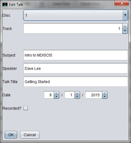

Edit Track

To edit a track in MDISCIS, click on the "Edit" button beside the track you want to edit in the track listing on the main screen. The dialog shown above will be appear on screen. You can change the following information:
Disc: This value cannot be edited.
Track: This value cannot be edited. It is not possible to edit more than one track at a time.
Subject: Change the subject.
Speaker: Change the speaker.
Talk Title Change the talk title.
Date: Change the date of the track using the arrows. Today's date is shown by default.
Recorded? Click on the checkbox if the track have been transferred to PC.
Finally, click on the "OK" button to edit the track. A confirmation message will appear in the status bar at the bottom of the main screen.